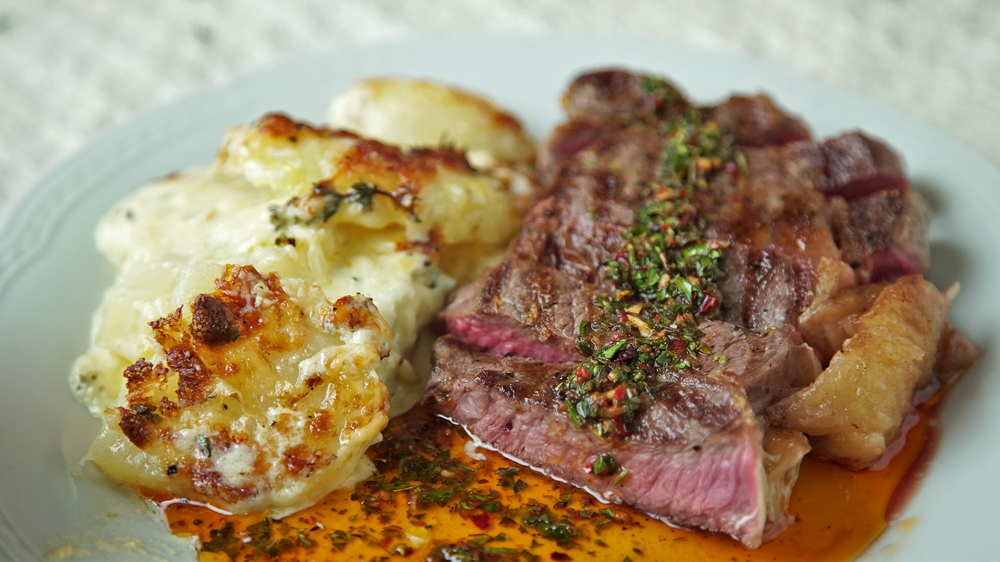

Bife de ternera con papas a la crema
Ingredientes:
- 2 bifes de ternera gruesos
- 4 papas medianas
- 1 cebolla mediana
- 2 dientes de ajo
- 1 taza de crema de leche
- 1/2 taza de queso parmesano rallado
- Sal y pimienta al gusto
- Aceite de oliva
- Perejil fresco picado para decorar
- Pelar y cortar las papas en rodajas finas. Cortar la cebolla en juliana y picar los dientes de ajo finamente.
- Calentar aceite de oliva en una sartén grande a fuego medio y agregar la cebolla y el ajo. Saltear hasta que estén dorados y suaves.
- Agregar las papas a la sartén y saltear durante unos minutos hasta que estén doradas y suaves.
- Agregar la crema de leche y el queso parmesano rallado y mezclar bien. Cocinar a fuego medio-bajo hasta que la crema espese y las papas estén completamente cocidas.
- Mientras tanto, calentar una sartén a fuego medio-alto con un poco de aceite de oliva. Salpimentar los bifes de ternera y cocinar durante 3-4 minutos por cada lado o hasta que estén cocidos a tu gusto.
- Servir los bifes de ternera junto con las papas a la crema y decorar con un poco de perejil fresco picado.
¡Buen provecho!
La ternera es una carne muy versátil y con una textura increíble, y con esta receta podrás disfrutarla en todo su esplendor.